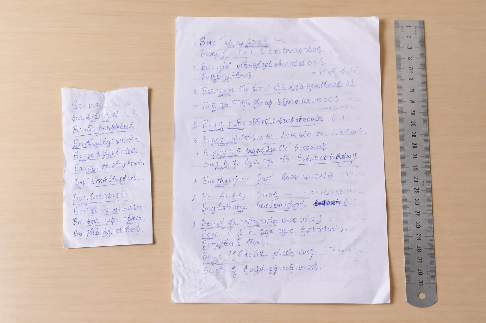

广州模仿签名参考中的小票纸，为什么不宜和A4截图直接比大小
小票、卡片和文件页尺寸不同，在聊天窗口里却可能显示得一样宽。屏幕尺寸一致，不代表实际字大小一致。

显示比例先确认
广州模仿签名参考来自不同纸张时，先看是否保留可靠尺寸。小图自动放大、大图自动缩小，都可能发生在聊天预览中。把两张截图调到同宽再比较姓名长度，会人为改变原有比例。没有可靠参照时，不必把屏幕上的厘米数写成原字尺寸。纸张型号只有提供者确认或实物可核对时才记录。页面比例不明确的图片，可以用于定位文字，但实际尺寸应暂时留空。
短落款也要保留区域
模仿签字参考应同时记录完整姓名与所在栏位，小票上的日期或印刷边界能帮助定位，但需要知道原始条件才能用于尺度核对。模仿笔迹正文与短落款观察范围不同，分别建组再关联，不把一张小卡片当成整页长文布局的直接依据。
材料身份说明清楚
笔迹鉴定资料中的原件照片、复印扫描和转发截图应各自标注。即使内容相同，也可能经历不同缩放过程。补到原件后再核对实际尺寸，旧副本继续保留来源关系；不为了让展示统一而反复拉伸图片，导致后来无法判断哪份还接近原始比例。